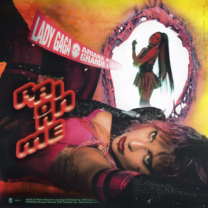
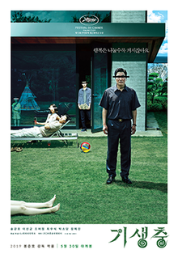
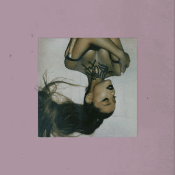
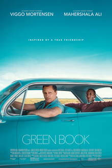
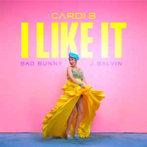
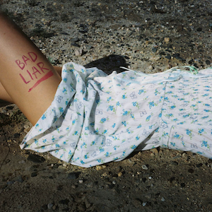

Welcome to the Pop Cultvre Monastery's Archives.
2020
"Apply yourself both now and in the next life. Without effort, you cannot be prosperous.
Though the land be good, you cannot have an abundant crop without cultivation."
-Plato
Click here to open the archive.
Best Picture - Nomadland

Top Album - Folklore, Taylor Swift

Top Song - Rain on Me, Lady Gaga and Ariana Grande
Top YouTube Video - 8:46 - Dave Chappelle
Trend of the Year - Virtual Influencers
2019
"Wealth consists not in having great possessions, but in having few wants."
-Epictetus
Click here to open the archive.
Best Picture - Parasite
Top Album - Thank U, Next, Ariana Grande
Top Song - Bad Guy, Billie Eilish
Top YouTube Video - No More Lies - James Charles
Trend of the Year - "Impossible" Meats
2018
"When you are inspired by some great purpose, some extraordinary project, all your thoughts break their bonds."
-Patanjali
Click here to open the archive.
Best Picture - Green Book
Top Album - Sweetener, Ariana Grande

Top Song - I Like It, Cardi B, J Balvin & Bad Bunny
Top YouTube Video - To Our Daughter - Kylie Jenner
Trend of the Year - 90s-Inspired Pop Apparel
2017
"Great deeds are usually wrought at great risks."
-Herodotus
Click here to open the archive.
Best Picture - The Shape of Water

Top Album - DAMN, Kendrick Lamar

Top Song - Bad Liar, Selena Gomez
Top YouTube Video - Until We Become Dust - Oyster Masked - The Masked Singer
Trend of the Year - Personalized One-to-one Marketing
2016
"When I let go of what I am, I become what I might be."
-Lao Tzu
Click here to open the archive.
Best Picture - Moonlight

Top Album - Lemonade, Beyonce